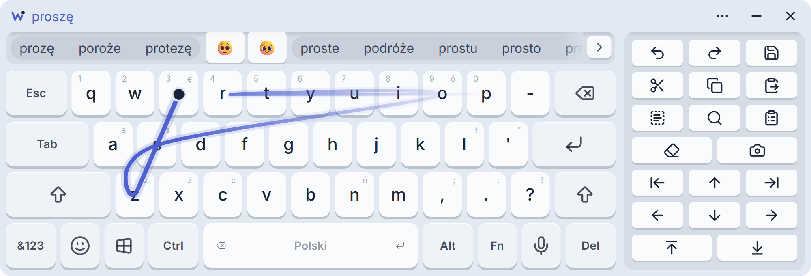
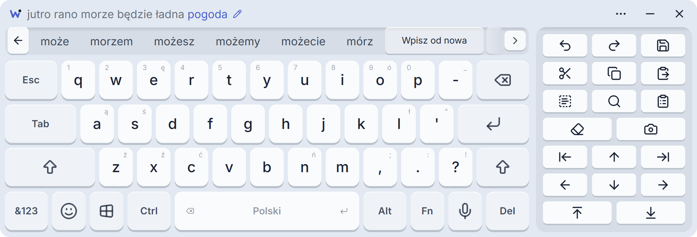
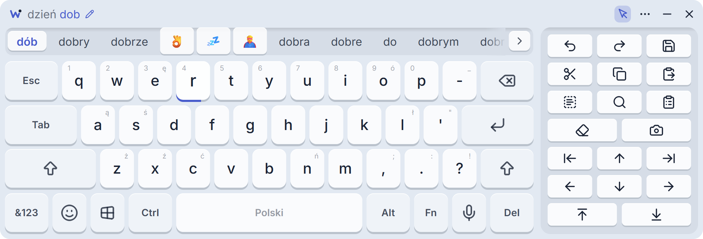
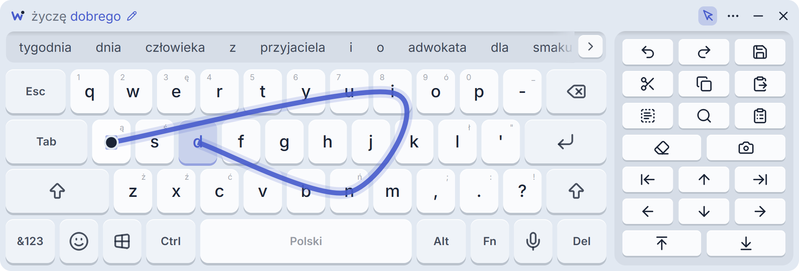
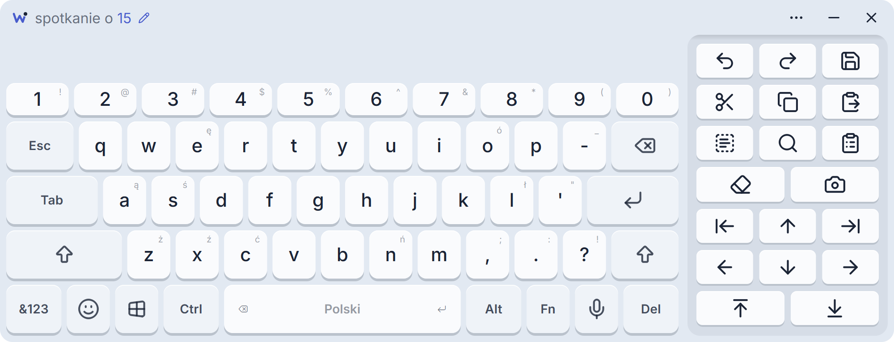
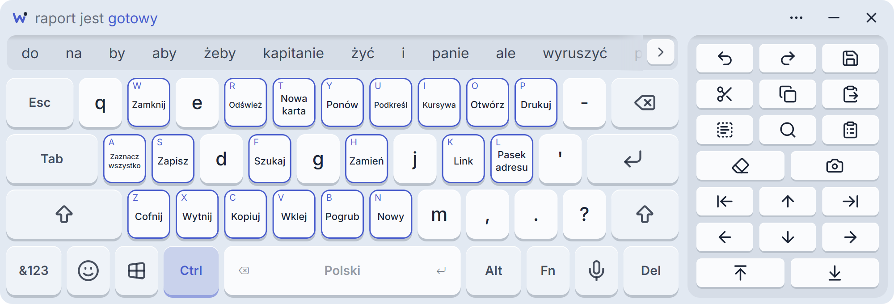
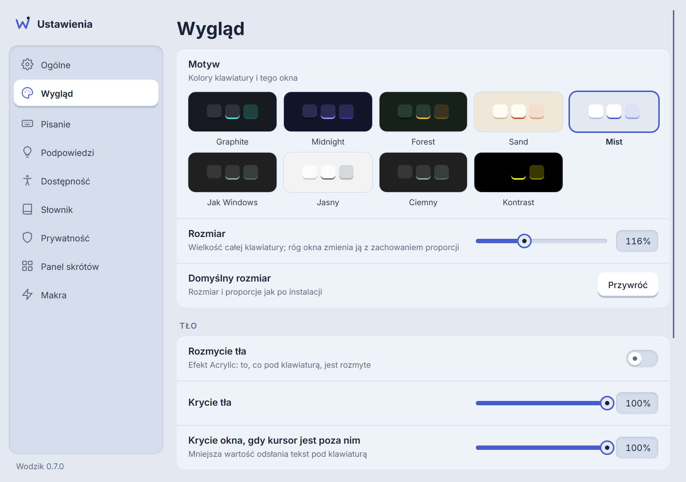

Swipe myszą
Przeciągnij po literach z wciśniętym przyciskiem myszy: całe słowo jednym ruchem. Systemowe klawiatury robią to tylko dotykiem.
Inne odczyty gestu w pasku
Klawiatura ekranowa dla Windows 11: klikanie, swipe i T9, podpowiedzi po polsku i angielsku. Wszystko offline.

Każda funkcja Wodzika jest po to, żeby klikać mniej i pisać szybciej.
Przeciągnij po literach z wciśniętym przyciskiem myszy: całe słowo jednym ruchem. Systemowe klawiatury robią to tylko dotykiem.
Dziewięć dużych pól: mniej celowania, a Wodzik sam zgaduje słowo. Swipe po polach też działa.
Do 15 słów w pasku: dokończenie wyrazu i następne słowo. Ogonki nie są potrzebne: „pozno” zamienia się w „późno”.
Zapamiętuje Twoje słowa i to, co zwykle piszesz po czym, więc podpowiedzi są coraz trafniejsze. Wszystko zostaje na Twoim komputerze.
Kliknij podgląd tekstu i wybierz słowo: zamienisz je, usuniesz albo wpiszesz od nowa, bez cofania kursora.
Klawisz klika się sam, gdy kursor na nim postoi. Całe słowo wpiszesz swipe’em z dwoma postojami.
Rząd symboli wybranego języka, nazwy z kilku słów jednym klawiszem i polecenia git, bez autokorekty.
Po włączeniu Ctrl albo Win litery pokazują nazwy skrótów, a pod Fn nazwy Twoich makr. Nie trzeba ich pamiętać.
Do tego emoji po polskich słowach („serce”, „kawa”), podgląd i wklejanie schowka, polskie znaki pod przytrzymaniem klawisza i gesty na spacji.
Przełączasz je jednym kliknięciem na górnym pasku klawiatury.
Klikaj albo przeciągaj po literach. Polski słownik ma około 350 tysięcy słów, a podpowiedzi biorą pod uwagę poprzednie słowa.

Każde pole to kilka liter, a Wodzik zgaduje słowo ze słownika. Gdy trzeba, klawisz abc pozwala pisać litera po literze.

Rząd symboli wybranego języka, słowa kluczowe w podpowiedziach, bez autokorekty i polskich liter.

Pomyłkę kilka słów wcześniej poprawisz bez strzałek i kasowania pół zdania.
Górny pasek pokazuje, co właśnie piszesz. Kliknij tekst albo ołówek obok niego, wybierz słowo, a pasek podpowie inne: najpierw te same litery z innymi ogonkami, potem podobne słowa. Wodzik sam przesunie kursor, zmieni tylko to, co trzeba, i wróci na koniec. Przed zmianą sprawdza, czy w polu jest wciąż ten sam tekst.

Dla osób, którym trudno klikać: wystarczy zatrzymać kursor. Autoklik działa na każdym klawiszu, w pasku podpowiedzi i w panelu skrótów, a włączysz go w Ustawienia → Dostępność.
Kursor zatrzymany na klawiszu wypełnia pasek na jego dole, a gdy pasek dojdzie do końca, klawisz się klika. Ten sam klawisz kliknie znowu dopiero po zjechaniu z niego, więc drżenie ręki nic nie dopisze. Backspace i strzałki powtarzają się przy dalszym postoju, a drugi postój na Shift czy Ctrl blokuje klawisz.

Postój na pierwszej literze zaczyna ślad, a litera się zapala. Prowadzisz kursor po kolejnych literach, krótkie zawahania nie przeszkadzają. Postój na ostatniej literze odlicza na całym klawiszu i wpisuje słowo. Ślad jest oczyszczany z drżenia ręki, więc rozpoznanie jest tak trafne jak przy zwykłym swipe.

Cyfry, symbole i skróty bez szukania po warstwach.
Niski rząd dziesięciu szerokich cyfr nad literami. Shift, przytrzymanie albo prawy klik wpisuje znak nad cyfrą, jak na zwykłej klawiaturze. Na warstwie symboli w miejscu cyfr są wtedy nawiasy i operatory.

Po włączeniu Ctrl albo Win litery pokazują nazwy skrótów: C to Kopiuj, V Wklej, Z Cofnij, a z Win: D Pulpit, V Schowek, L Zablokuj. Litera zostaje w rogu klawisza.

Nie musisz szukać Backspace ani Entera w rogach klawiatury. Spacja jest największym klawiszem, więc najłatwiej w nią trafić.
Przeciągnięcie w lewo o szerokość klawisza kasuje znak, a każde półtora klawisza dalej kasuje kolejne całe słowo. Enter idzie dopiero po puszczeniu przycisku, a powrót do środka go anuluje.
Około 70 gotowych skrótów w grupach: edycja, kursor, przeglądarka, multimedia, okna i pulpity wirtualne, Teams. Możesz też dodać własne i ułożyć kilka grup.
Makra wpisują tekst, naciskają skróty i robią pauzy, np. powitanie z podpisem albo {ctrl+s}{pause 300}{alt+f4}. Uruchamiasz je klawiszem Fn albo z listy w panelu.

Zaznacz tekst w dowolnym programie, a Wodzik podsunie przyciski: w pasku podpowiedzi albo w dymku nad zaznaczeniem.
„Szybkie redagowanie dokumentów bez odrywania ręki od myszy”
„+ 7 słów” dodaje do słownika wszystkie słowa z zaznaczenia, których słownik jeszcze nie zna.
Rząd symboli wybranego języka, podpowiedzi ze słów kluczowych i Twoich nazw, bez autokorekty. W komentarzach i tekstach w cudzysłowie wracają podpowiedzi po polsku i angielsku.
Klawisz a_b, potem słowa oddzielane spacją.
Przytrzymaj a_b: a_b, aB, Ab, A_B, a-b.
Przytrzymaj = albo -, żeby wybrać operator. Przytrzymany ( wstawia () z kursorem w środku.
Proste polecenia wykonują się od razu, commit -m czeka na opis.
Klawisze mają krawędź i wciskają się pod kursorem, a za swipe’em ciągnie się świetlista kometa. Okno ustawień i menu wyglądają jak sama klawiatura.
Motywy: Graphite, Midnight, Forest, Sand i Mist, a do tego „Jak Windows”, jasny i ciemny z kolorem akcentu Windows oraz wysoki kontrast. Róg okna zmienia rozmiar bez zniekształcania klawiszy.

Prawie każdą funkcję możesz wyłączyć, a resztę dopasować do siebie. Dziewięć stron ustawień i kilkadziesiąt opcji, bez grzebania w plikach.
Do tego strona Dostępność (autoklik, swipe zatrzymaniem, czas przytrzymania), słownik osobisty z wyszukiwarką i listą zablokowanych słów, edytor panelu skrótów, dwa zestawy makr (do tekstu i do kodu), lista programów, w których Wodzik nic nie zapamiętuje, oraz eksport i import wszystkich ustawień do jednego pliku.
To, co wpisujesz, nie opuszcza Twojego komputera. Bez telemetrii, bez serwerów, bez konta.
Program nie zawiera kodu sieciowego: niczego nie wysyła i niczego nie pobiera. Przewidywanie słów też działa lokalnie.
Słownik osobisty, historia słów i makra są zaszyfrowane kluczem Twojego konta Windows (DPAPI).
W polach haseł, w terminalach i w wybranych programach nic nie jest podpowiadane, poprawiane, zapamiętywane ani pokazywane w podglądzie.
Bez konta i logowania. Uczenie wstrzymasz jednym przyciskiem, a dane przeniesiesz eksportem do pliku.
Do tego: nie podsłuchuje fizycznej klawiatury, dziennik diagnostyczny nie zawiera wpisywanego tekstu, instaluje się bez uprawnień administratora, a na życzenie znika z nagrań i udostępniania ekranu. Wodzik nie obroni przed programem, który już działa na Twoim koncie z tymi samymi uprawnieniami; tego nie potrafi żadna klawiatura ekranowa. Problem z bezpieczeństwem? Napisz: security [małpa] wodzik.app.
Wodzik nie jest jeszcze dostępny do pobrania. Napisz do mnie, jeśli chcesz go przetestować, masz pytanie albo pomysł.
hello [małpa] wodzik.appCtrl + Alt + K albo ikona w zasobniku obok zegara. Klawiatura może też sama wysuwać się po kliknięciu w pole tekstowe (Ustawienia → Ogólne).
Tak. Ustawienia → Dostępność → Klik po zatrzymaniu kursora: klawisz klika się sam, gdy kursor na nim postoi. Swipe zatrzymaniem wpisuje całe słowo dwoma postojami, na pierwszej i ostatniej literze. Strzałka kursora na górnym pasku wstrzymuje autoklik.
Kliknij podgląd tekstu na górnym pasku (albo ołówek obok niego) i wybierz słowo. Pasek pokaże inne słowa do wstawienia, a także „Wpisz od nowa” i „Usuń”. Działa od drugiego słowa w zdaniu; pierwsze poprawisz Backspace’em.
Słowo spoza słownika Wodzik zapamiętuje sam, a podpowiada od drugiego użycia. Od razu doda je przycisk „+ słowo” w pasku albo Ustawienia → Słownik. Prawy klik na podpowiedzi usuwa ją z podpowiedzi.
Przeciągnij róg okna: klawiatura rośnie albo maleje bez zniekształcania klawiszy. Motyw, rozmiar, przezroczystość i wielkość napisów zmienisz w Ustawienia → Wygląd, a „Przywróć” wraca do rozmiaru po instalacji.
Tak: Ustawienia → Ogólne → Skrót pokaż/ukryj. Kliknij go i naciśnij nowe połączenie klawiszy, Esc anuluje.
Ustawienia → Prywatność → Eksportuj do pliku, a na drugim komputerze Importuj z pliku. Plik eksportu nie jest zaszyfrowany, więc po przeniesieniu go usuń.
Działa bez internetu i nie zawiera kodu sieciowego, w polach haseł niczego nie zapamiętuje, a Twój słownik i makra są zaszyfrowane dla konta Windows. Nie chroni przed programem, który już działa na Twoim koncie: ten ma te same uprawnienia co Wodzik.
Nie. Słowniki, podpowiedzi i uczenie działają na Twoim komputerze. Wodzik niczego nie wysyła i sam się nie aktualizuje: nową wersję pobierzesz ze strony.
Cena nie jest jeszcze ustalona. Przed zakupem będzie można wypróbować Wodzika w wersji próbnej. Jeśli chcesz testować wcześniej, napisz do mnie.
Nie wpisze tekstu do okien uruchomionych jako administrator. T9 nie wpisze słowa spoza słownika (do tego służy QWERTY), a swipe po polach T9 jest mniej trafny niż na QWERTY.